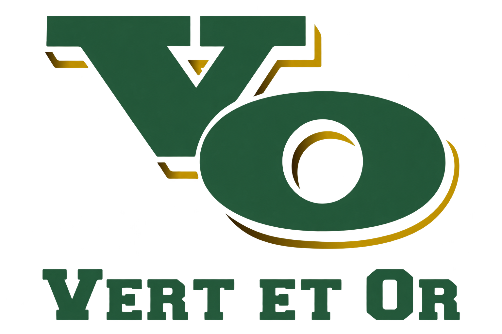

Tous les matchs, tous les sports, une seule place. Le calendrier officiel des partisans du Séminaire Saint-Joseph.
Le calendrier ultime pour ne manquer aucun match du Vert et Or.
Page conçue par Billy Gélinas.